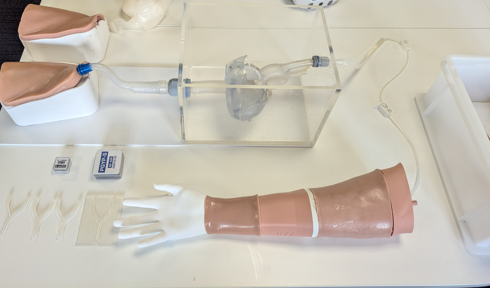

Hospital Virtual Valdecilla
Acceso braquial
Simulador de acceso vascular
Diseño y fabricación de un simulador sintético del brazo con módulos de acceso braquial, acceso radial y soporte.
Ver imágenes
Mi aportación
- Diseño CAD con Fusion 360 a partir de modelos anatómicos digitales del brazo.
- Organización del simulador en acceso braquial, acceso radial y soporte.
- Fabricación de un prototipo mediante impresión de filamento e inyección de moldes con distintos materiales.
Objetivo
Desarrollar un simulador para entrenamiento de acceso vascular que reprodujera la vasculatura, el sistema nervioso y la estructura ósea del brazo.
Diseño
Se utilizaron modelos anatómicos digitales realistas como base para el diseño en Fusion 360. Los componentes se organizaron en tres grupos: acceso braquial, acceso radial y soporte.
Prototipado y fabricación
Se fabricó un primer prototipo mediante fabricación aditiva de filamento e inyección de moldes con diversos materiales.
Pruebas y uso
El simulador se utilizó en cursos de cardiología y enfermería. La galería incluye fotografías del conjunto y de las pruebas con ecografía.